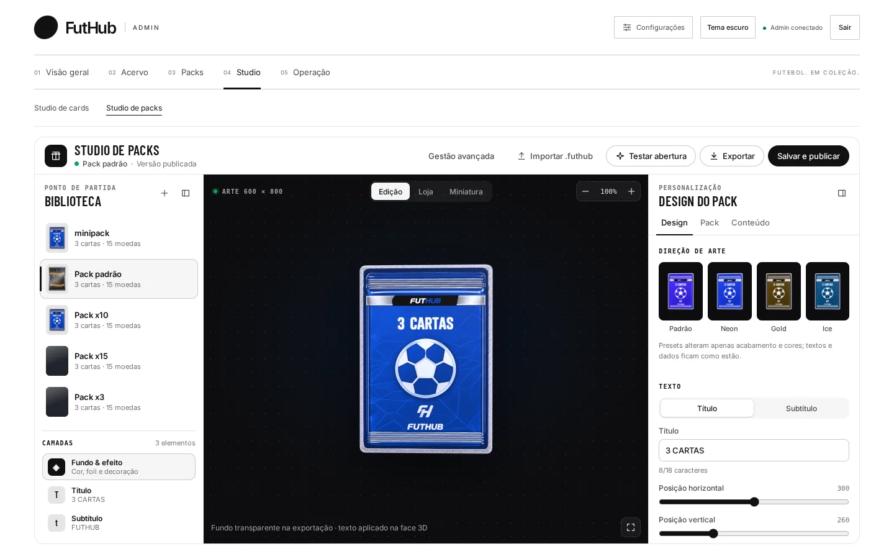
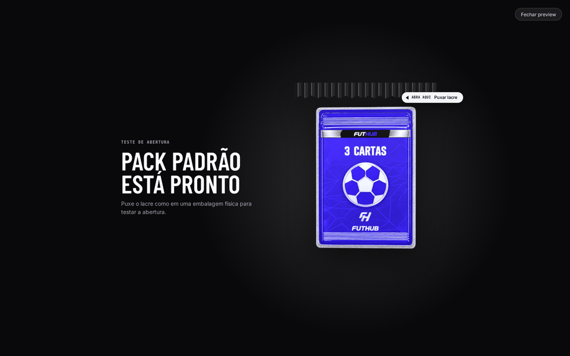
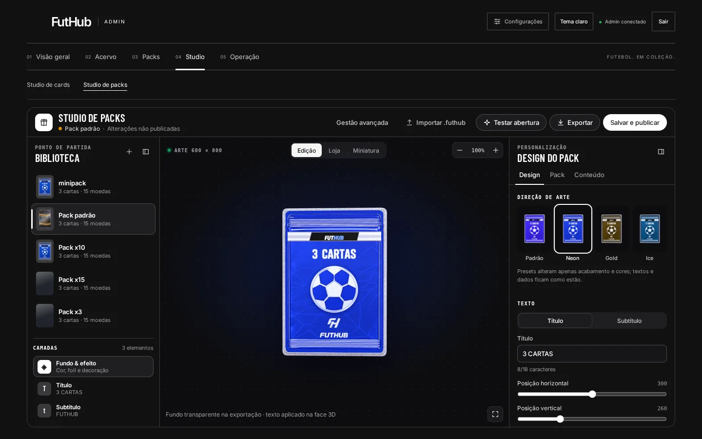

O que faz
Quatro direções de arte, prontas.
Os presets Padrão, Neon, Gold e Ice mudam acabamento, cores, textos e efeitos de uma vez. Os dados do pack não mudam. A partir do preset você refina: acabamento Foil, Holográfico ou Chrome, efeito de Aura, Fogo ou Raios, foto frontal, título e subtítulo posicionados por controle deslizante.

Momento mágico
Teste a abertura antes do jogador.
“Testar abertura” mostra o pack numa tela escura, como no jogo. Puxe o lacre e as cartas se revelam na ordem em que o jogo vai mostrá-las.

Como funciona
Do rascunho à loja.
Escolha o pack
A biblioteca lista os packs com quantidade de cartas e preço. Cada um tem três camadas editáveis: Fundo & efeito, Título e Subtítulo.
Veja em três modos
Edição para trabalhar, Loja para ver como aparece à venda e Miniatura para conferir se continua legível em tamanho pequeno.
Salve e publique
Exporte a arte com fundo transparente, salve um arquivo de projeto .futhub para reabrir depois, ou use “Salvar e publicar” para atualizar o pack no jogo.
